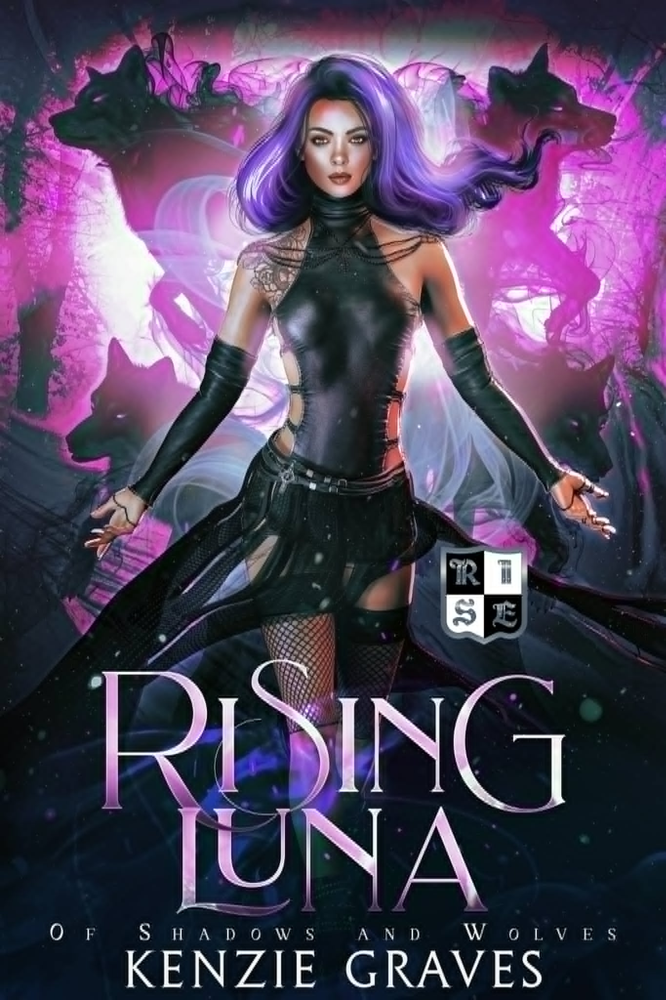

Rejected Luna
Buy NowA heart made of shadow. A secret unearthed. A fate forged anew.
My goal is clear—excel in my classes and make it home
alive. But from the moment I step onto the premises of R.I.S.E. Academy, students start vanishing and showing up dead. Being
labeled as an outcast for my Shadowborn blood only makes things worse, and soon I find myself tangled in a web of danger and
deceit. Between chaos and my academic responsibilities, the last thing I expect to find is another fated mate, let alone two,
nor did I expect them to unearth more secrets than answers… Will these bonds be enough to protect me from what's lurking in the
shadows? Or will I fall into the darkness for good this time?

Rising Luna
Buy NowA corrupted teacher. A rising student. A game of shadows.
The darkness hasn't left. It's only grown. Now, it's not just
students disappearing—it's the locals too. I know Lupe is behind it, but without solid proof, the Council Members won't listen.
Every time I get close to uncovering the truth, Lupe manages to slip away, leaving me grasping at shadows. The clock is ticking,
and if I don't find a way to expose the truth, more lives will be lost. Do I even stand a chance in this mental chess game with Lupe?
Every move I make feels like it's met with a counter before I can even see it coming. But Lupe is cunning, always one step ahead, and
I can't shake the fear that she might succeed in keeping me trapped in this endless, dangerous game. With Silas fighting for his way
back into my heart, my attention isn't where it should be. With each death happening while I'm distracted, I feel like they are on my
hands. Time is running out. If I don't stop Lupe soon, the world will be covered in shadows I could have stopped.